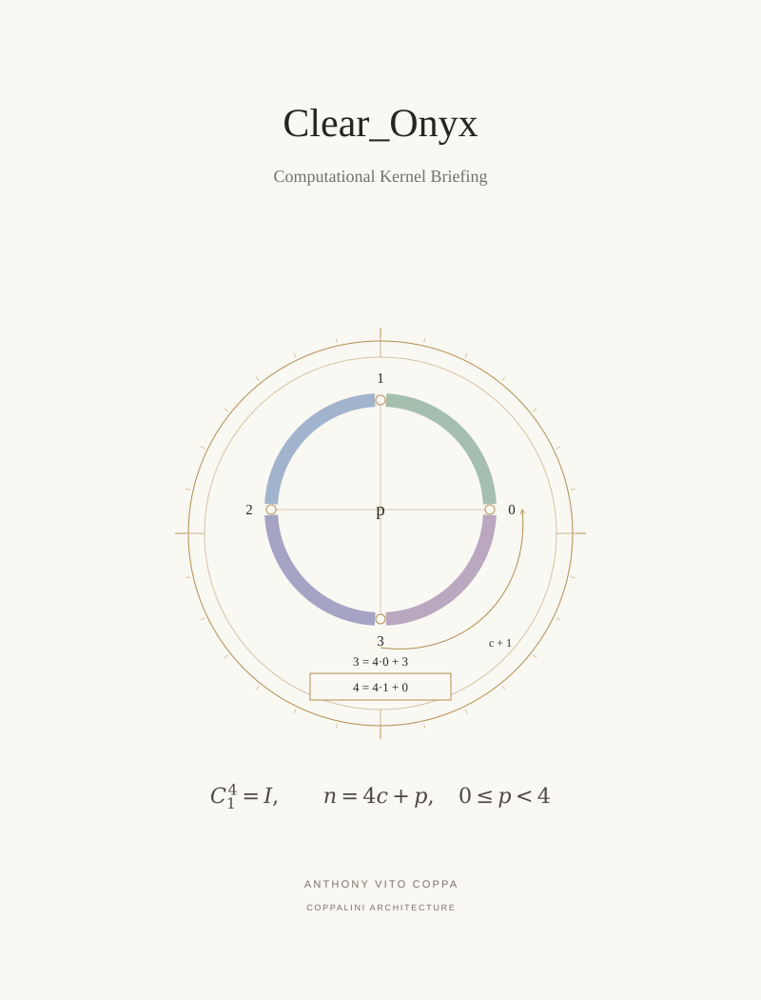

P 08 / Principal paper / COVER ARTWORK
Clear_Onyx Computational Kernel Briefing


Four quarter-turn positions share a separate completed-cycle counter.
P 08 / Principal paper / COVER ARTWORK

Four quarter-turn positions share a separate completed-cycle counter.